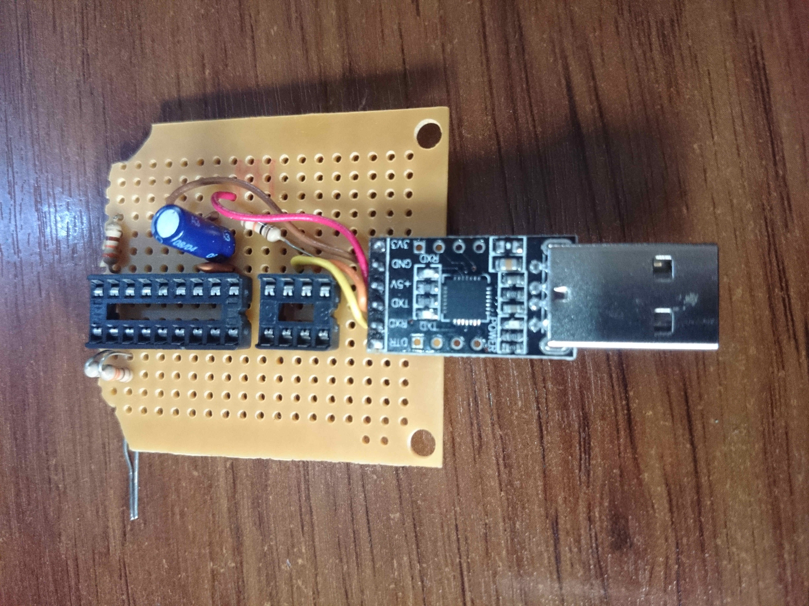
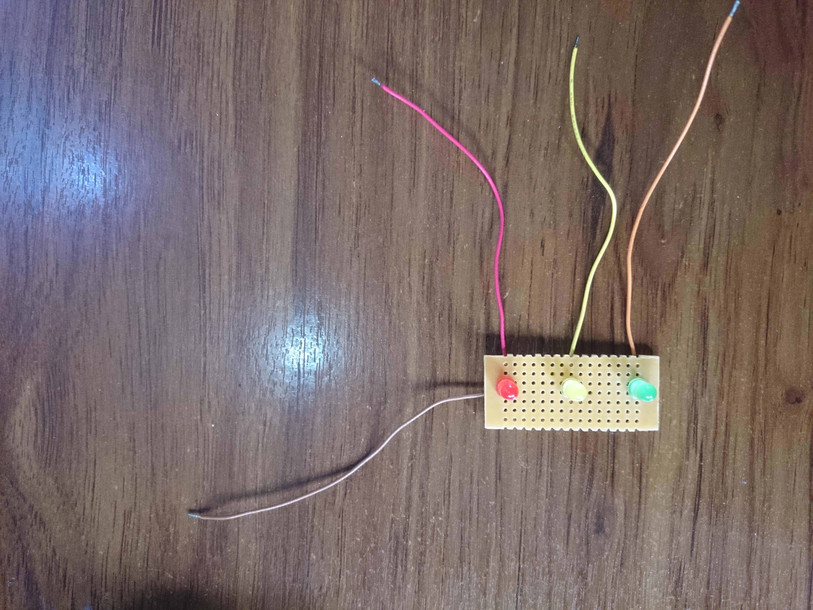
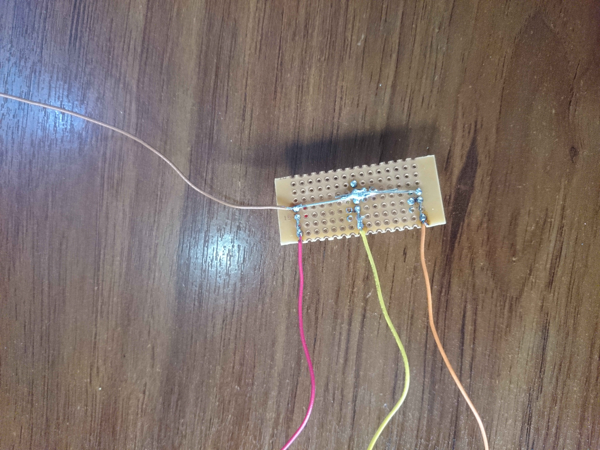
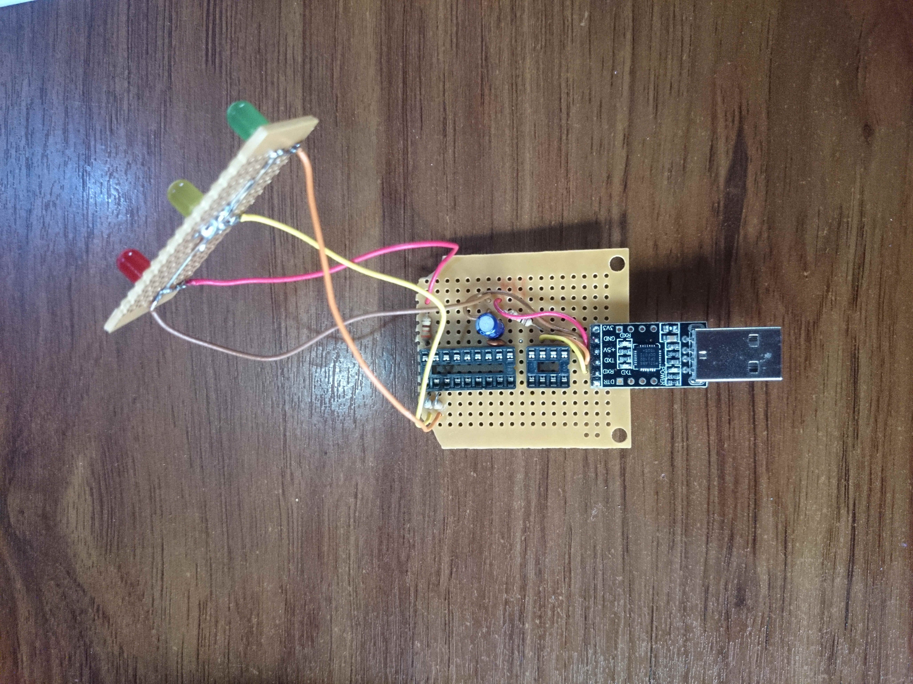
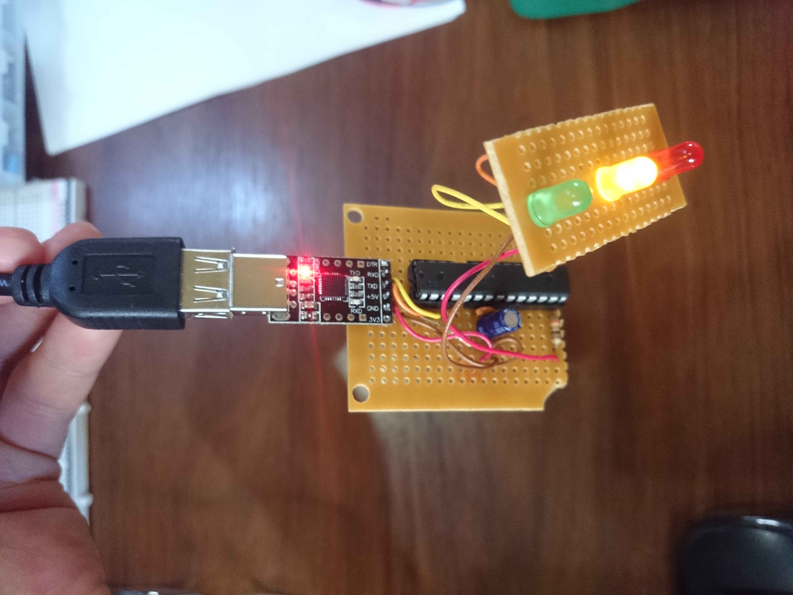
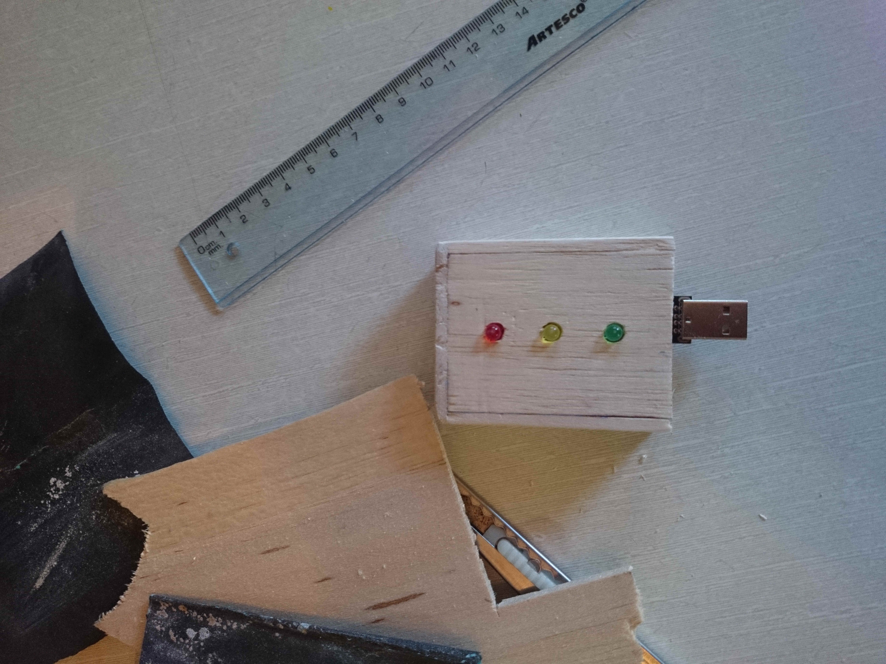
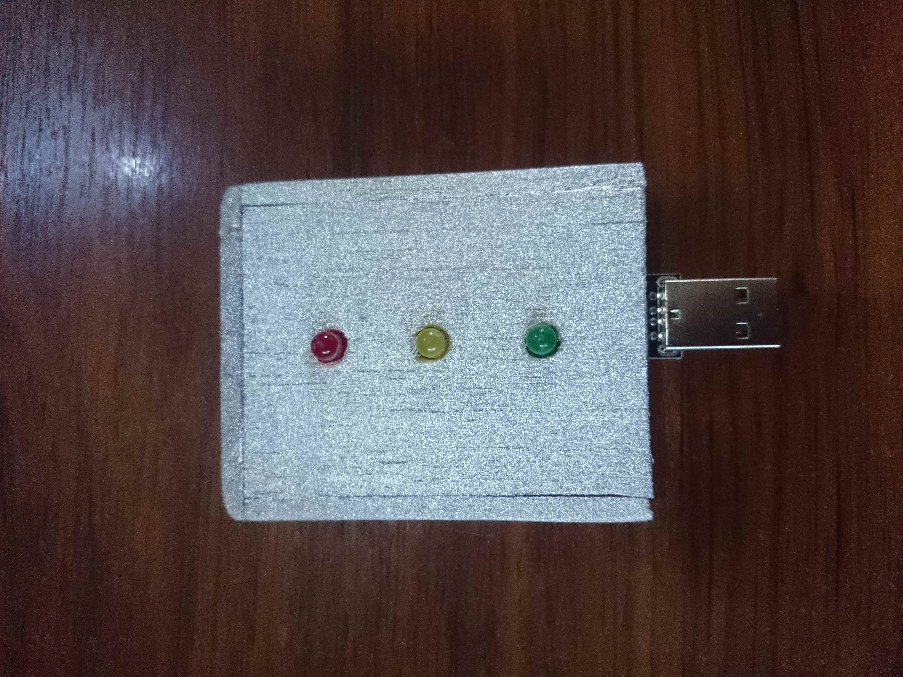
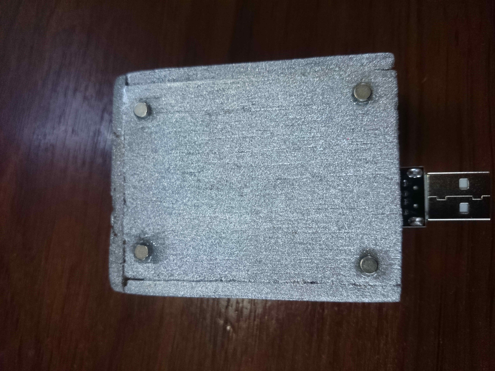

Robert C. Martin (Uncle Bob) said in a talk:
Imagine you have a button that you can push, it will test your code and if everything is working a green light will come up, but if something is break, a red light will come up […]
He was of course talking about TDD, but I was bored and get inspired to build this little toy.
Hardware schematics, firmware and host software is available in this Github repo. Along with information on how to compile and use.
This is a physical toy traffic light to be used with software development TDD (and testing in general) tools. It will not boost your productivity nor make you a better programmer or TDD practitioner, but it looks cool :)
Lets explain how it works, it’s very simple:
Hardware
The atmega328p AVR microcontroller is very popular and cheap, but if you buy them on Ebay for example, chances are it comes with an Arduino bootloader, which gets in the way because we can perfectly use the internal oscillator instead of an external 16Mhz crystal. So the first thing is to change de fuses to the default ones:
# avrdude -p m328p -c usbasp -U lfuse:w:0x62:m -U hfuse:w:0xd9:mNow we are using the internal 1MHz oscillator, perfect!
I don’t have a PCB yet (although it should be pretty easy as I made the circuit schematic using kicad) but the circuit is small and simple so it’s easy to build it with prototype PCB. Additionally I added some small neodymium magnets in the back to stick it easily close to my monitors.
       
Software
The firmware is no more than UART boilerplate with a baud rate of 4800 so it is stable with the 1MHz clock speed.
#include <avr/io.h>
#include <util/delay.h>
#define F_CPU 1000000
#define BAUD 4800
#define BAUD_PRESCALE ((((F_CPU/16) + (BAUD/2)) / (BAUD)) - 1)
char getchar(void)
{
while ((UCSR0A & (1 << RXC0)) == 0) {}
return UDR0;
}The main loop will wait for a command r, y or g and turn on the pin corresponding to the color LED.
#include <avr/io.h>
#include <util/delay.h>
#define F_CPU 1000000
#define BAUD 4800
#define BAUD_PRESCALE ((((F_CPU/16) + (BAUD/2)) / (BAUD)) - 1)
char getchar(void)
{
while ((UCSR0A & (1 << RXC0)) == 0) {}
return UDR0;
}Notice how if another character is received the output is cleared so all the LEDs are off.
The host software configures the serial port with a 4800 baud rate:
void serial_init(char* port)
{
if (COM_FD > 0)
{
return;
}
// Open serial port file
int fd = open(port, O_RDWR | O_NOCTTY | O_NDELAY);
// Configure serial port
struct termios config;
if (tcgetattr(fd, &config) != 0)
{
COM_FD = -1;
printf("Error while configing serial port");
exit(1);
}
cfsetispeed(&config, B4800);
cfsetospeed(&config, B4800);
config.c_cflag |= (CLOCAL | CREAD | CS8);
config.c_cflag &= ~(PARENB | PARODD);
config.c_iflag = 0;
config.c_oflag = 0;
config.c_lflag &= ~(ICANON | ECHO | ECHOE | ISIG);
config.c_cc[VTIME] = 5;
config.c_cc[VMIN] = 0;
if (tcsetattr(fd, TCSANOW, &config) != 0)
{
COM_FD = -1;
printf("Error while configing serial port");
exit(1);
}
COM_FD = fd;From then controlling the LEDs is as simple as
write(COM_FD, "r", 1);As I said, pretty simple… Find more information about how to use it in the Github repo.